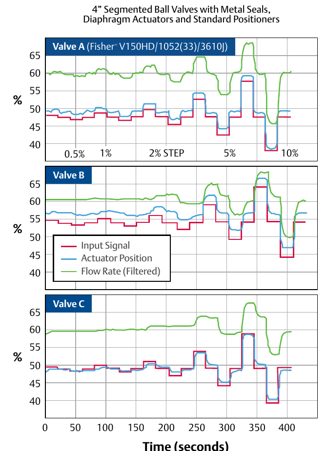

Deadband, Measured

- 1Same step commands applied to all three valves — red = input signal, blue = actuator position, green = filtered flow
- 2Valve A's blue line tracks its red command almost immediately, at every step size
- 3Valves B and C visibly lag before the blue line moves — more deadband in that assembly
After Control Valve Handbook, 6th ed., Fig. 2.3 — used directly. Component Index: ch3-cmp-deadband-effect-chart (Component Index — 14101 ch3.md).